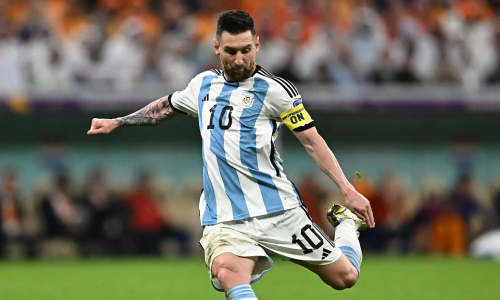
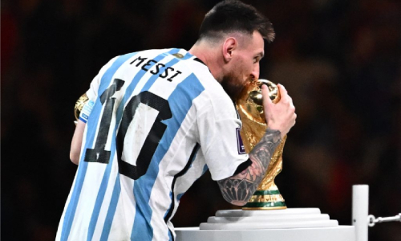
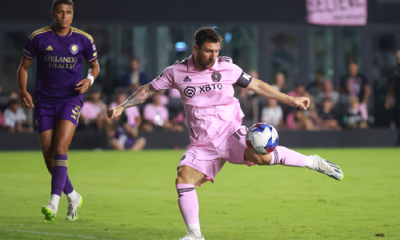

LEONEL MESSI
DESCRIPCION
Lionel Andrés Messi Cuccittini (Rosario, 24 de junio de 1987), conocido como Leo Messi, es un futbolista argentino que juega como delantero o centrocampista. Jugador histórico del Fútbol Club Barcelona, al que estuvo ligado veinte años, desde 2021 integra el plantel del Paris Saint-Germain de la Ligue 1 de Francia.
COPAS GANADAS
- 10 Ligas de España
- 7 Supercopas de España
- 7 Copas del Rey
- 4 Champions League
- 3 Mundiales de Clubes
- 3 Supercopas de Europa
- Mundial Sub 20 del 2005
- los Juegos Olímpicos 2
IMÁGENES


